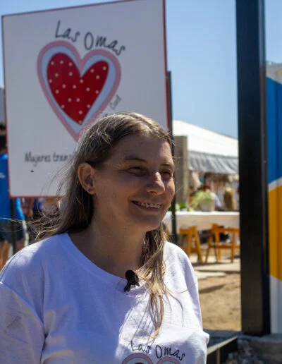
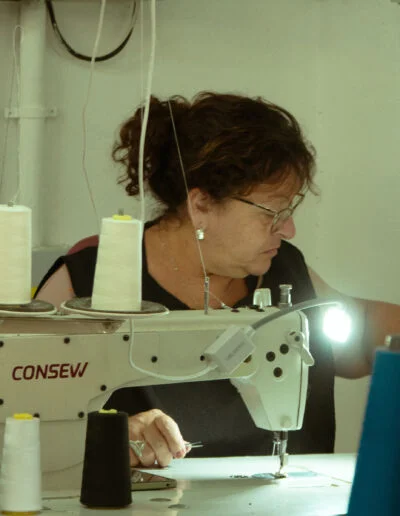
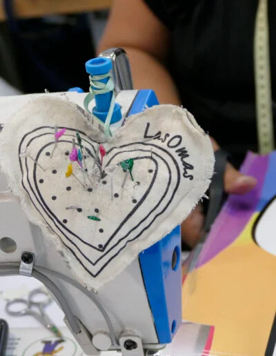
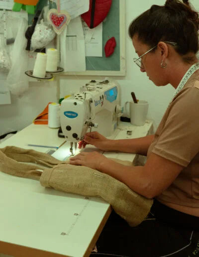
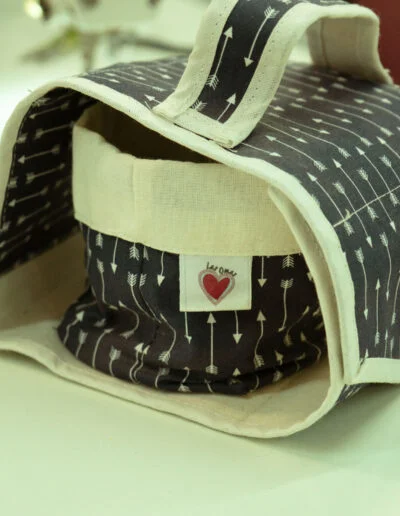
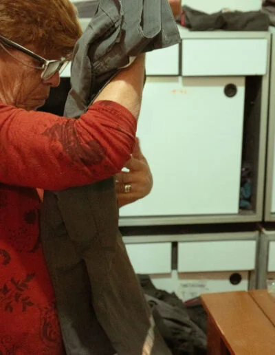
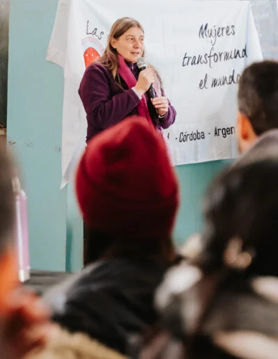

Mujeres transformando el mundo






Somos una organización civil que brinda contención, capacitación en oficios y trabajo a mujeres de la comunidad. Lo que aprendemos juntas se convierte en producción, ingresos y autonomía.

Un espacio que entreteje comunidad
Acompañamos a mujeres excluidas económica y socialmente, o atravesadas por situaciones de violencia de género, para que fortalezcan sus capacidades y logren autonomía personal y colectiva.
- ContenciónEscucha y acompañamiento con perspectiva de género.
- CapacitaciónOficios, habilidades digitales y terminalidad escolar.
- ProducciónUnidades productivas que generan ingresos.
Contención · Capacitación · Producción · Mujeres transformando el mundo ·
Sumate a transformar el mundo
Con dinero, ropa, tu tiempo o desde tu empresa.